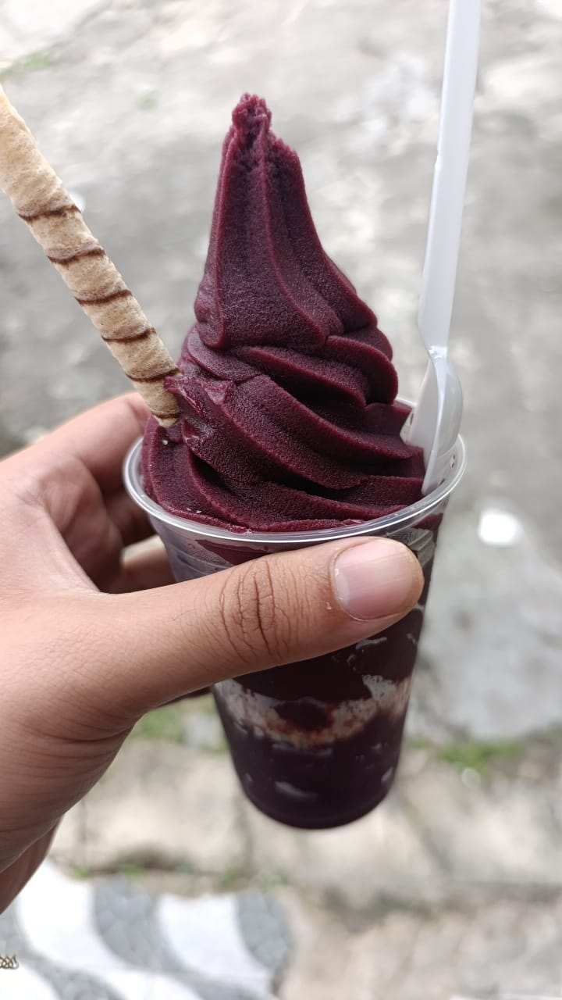

-
Dezin, On Crack

Este respeitavel guerreiro chapadão é a personificação da harmonia entre droga boa avançada e energia cósmica. Empunhando o Cachimbo Estelar, Dezin On Crack pode manipular o espaço-tempo, anulando ataques e fortalecendo aliados.
ATK/ 2800 DEF/ 2500 -
Dvd Não aprova

Uma criatura mítica nascida da fusão de nebulosas e energia estelar Não aprova seu movimento, esta carta quando em campo, nao aprova nenhum dos ultimos movimentos
ATK/ 3200 DEF/ 2000 -
Padre, o responsavel

Armado com a lendária Touca de proteção, este cavaleiro cibernético é um protetor das dimensões digitais. Este monstro quando em campo, atualiza todas as validades dos produtos em jogo
ATK/ 2600 DEF/ 2300 -
Luanzin Surfista

Luan Surfista, ele surfa na sua, na minha, na onda de todos, pelo seu pequeno tamanho, seu estilo dos 2000's KID's derrota todos os monstro em modo de batalha.
ATK/ 3500 DEF/ 3000 -
AÇAI
Simplesmente... Açai, se comer mt rápido congela o cerebro".
ATK/ 2400 DEF/ 2600 -
Little Luan do carro vermelho

Vestindo uma armadura forjada com fragmentos de estrelas, Luanzinho do carro Vermelho, nao se baseia em fusoes para sua invocação, o bicho é brabo, carros vermelhos correm mais rápidos, dai ele é ligeiro mesmo".
ATK/ 3000 DEF/ 2800 -
Fumaça do Verde

Fumaça do Verde! deixa geral lombradão ouvindo um som maneiro
ATK/ 2900 DEF/ 2100